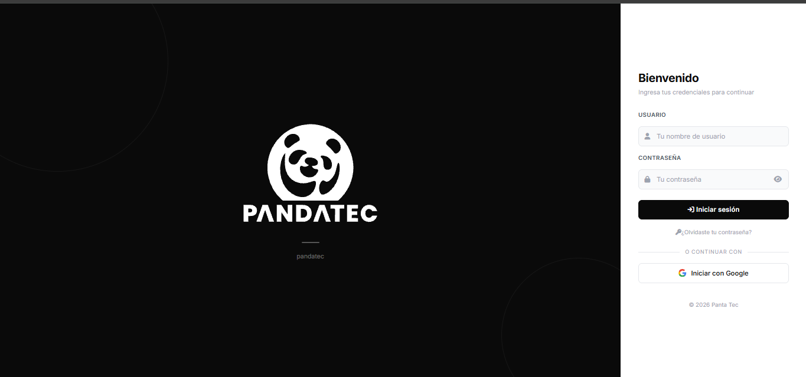

APLICACIÓN REAL · VISTA PREVIAPROYECTO DESTACADO/ 001
Pandatec.
Un punto de partida digital para negocios de celulares.
Un sistema de gestión web con acceso por usuario y contraseña, además de inicio de sesión con Google. Un espacio propio para centralizar el trabajo del negocio.
Conocer PandatecAlojado en Render. La primera carga puede tardar unos momentos.